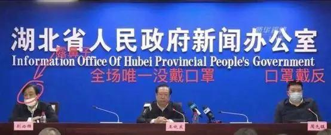
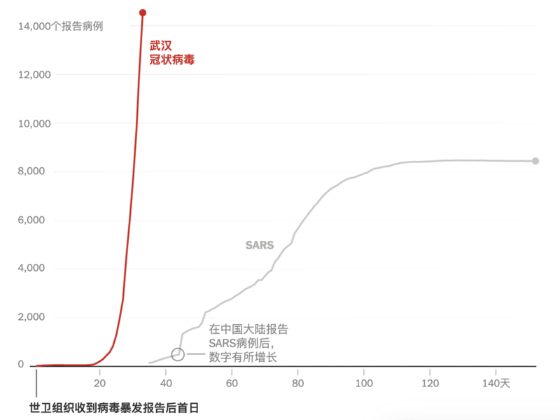
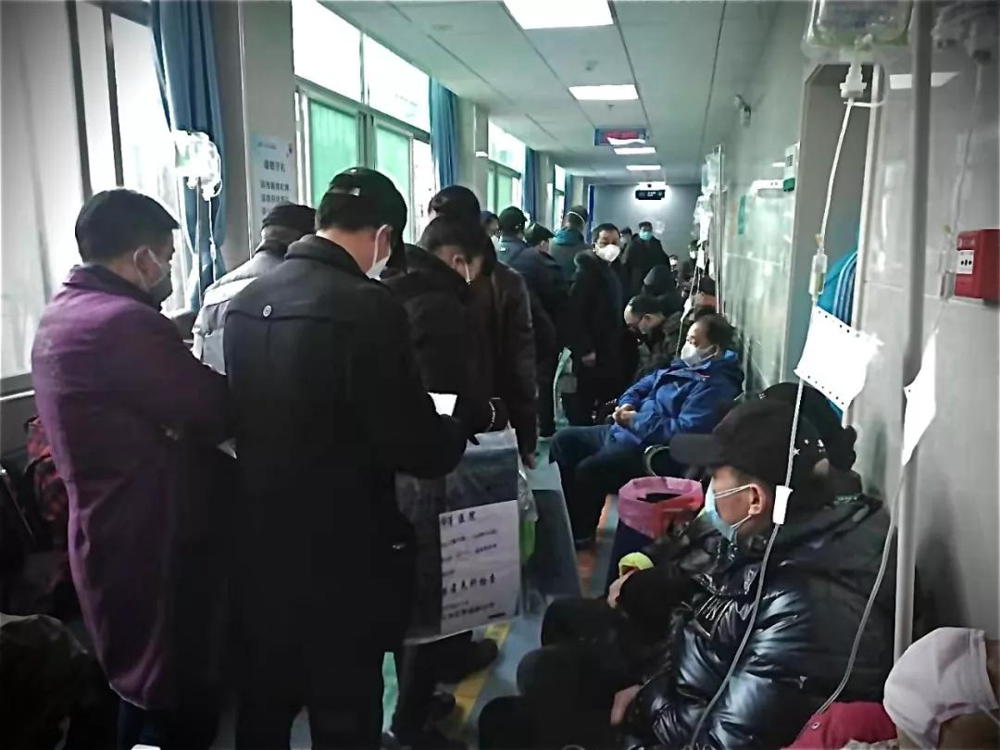

又有很多天没上线了。
俺知道：维稳系统里面的某些人，巴不得俺死于这次肺炎疫情。很抱歉，让他们失望了。截止到今天，俺还活着，暂时没被感染 :)
对于那些关心俺的读者，有必要再次唠叨一下：
本人上一次在博客回复读者留言，是大年初一；今天是正月十五元宵节。本轮随机静默，正好是14天（【没有】超过“正常静默”的上限，是正常现象）。
本次疫情，形势严峻。俺除了要提防“肺炎”，还要考虑【上线时间的风险】。
如果上线太活跃，一旦感染肺炎并被隔离，就无法再以这个身份上线。那么，朝廷走狗根据俺突然静默，就能猜测出“编程随想可能被隔离”。在这种情况下，对俺身份的排查，范围就会缩小很多。
反之，如果俺上线很少，静默的时间间隔比较长，就算不幸被感染并遭隔离，要对俺的身份进行排查，范围会比较大（时间跨度越大，排查范围也越大，对俺就越安全）
因此，在如今这个非常时期，俺要尽量【减少】线上活动。希望各位读者能够谅解。
这次武汉肺炎的疫情之惨烈，显然出乎广大民众的意料之外。在这种情况下，很多人开始意识到【政府失职】。但大多数人只是把矛头指向地方政府（湖北省 or 武汉市）。俺今天想说的是——朝廷高层（裆中央）要负更大的责任。
种种迹象表面——裆中央在【元旦前后】就已经知道疫情的严重程度，但一直在隐瞒/掩盖。
2月3日外交部发言人华春莹主持例行记者会。下面是这个婆娘的原话：
请注意：这个讲话是在2月3日。外交部发言人说“自1月3日起，共30次向美方通报”。掐指一算，相当于【每天通报】。如果病毒没有人际传播，需要每日通报吗？如果疫情不严重，需要每日通报吗？外交部天天向美国佬通报疫情，充分说明了——朝廷最晚在1月3日，就已经知道疫情凶险。
另外，从上述细节也可以看出——在朝廷心目中，天朝14亿屁民的安危，还【不如】大洋彼岸的美国佬重要。
1月下旬，“中国疾病预防控制中心”的研究人员在国际顶级期刊《新英格兰医学杂志》上发表题为《新型冠状病毒感染性肺炎在武汉的早期传播动态》的论文。以下是相关报道：
《NEJM 新研究：去年12月中旬新冠病毒已发生人际传播 @ 新京报》
（注：为防止被和谐，再放一个“互联网档案馆”的网页快照）
列位看官请注意：
虽然论文是1月底才发表，但相关的数据收集，在1月初（甚至在去年底）就已经开始了；
而且该论文的几个作者都是【身居高位】的家伙——
最先在社交网络（微信）上发出警告的那8个医生，元旦期间被武汉警方【传唤】，然后被扣上“造谣”的罪名。这事儿，大伙儿应该都知道了。
不过捏，很多读者可能不晓得——这8人还享受了【CCTV 通报批评】的待遇。相关视频的截图如下
请注意：视频左下角的播报日期是1月2日，也就是外交部通报美国的前一天。
前面俺已经分析了——朝廷高层在元旦前后，就已经知道疫情的严重性。
朝廷高层如果为屁民着想，就【不该】让央视发这样的新闻。因为这样的新闻一播出，肯定在湖北的医疗系统引发【寒蝉效应】——导致湖北省的医务人员都不敢发声。
所以，从央视在1月2日播放这条新闻，再次说明了：朝廷方面企图掩盖问题，企图用“造谣”的大帽子，让医护人员闭嘴。
批完朝廷高层，再来吐槽湖北省的地方衙门。
1月26日晚，湖北省政府召开有关疫情防控新闻的发布会。请注意，这是疫情爆发之后，当地衙门的【第一个】新闻发布会。显然，这是个非常重要的发布会（全国上下都在盯着呢）。而湖北的官僚，却在如此重要的场合，争相表现出自己的弱智。
坐主席台左边的“湖北省委秘书长别必雄”，戴口罩【露出鼻孔】；
坐主席台右边的“武汉市长兼省委常委周先旺”【口罩戴反】了；
至于居中而坐的“湖北省长王晓东”，干脆【没戴口罩】。

省长全程照稿念（被网友戏称为【复读机】）。当他说到“本省自产口罩”时，先说了
过了1分20秒，有助理给他递纸条，这个糊涂省长赶紧澄清：
又过了1分钟，糊涂省长再次改口说：
堂堂一个大省的省长（辖区内将近6000万人口），在如此重要的场合，连【复读机】都做不好。这叫人情何以堪？！
这时候，俺就想起香港时评人钟祖康写的一本书，书名名叫《中国比小说更离奇》。
第三个奇葩的地方在于——“湖北省长”与“武汉市长”发布的内容，口径不一致。一个说：
从这里可以看出——不光台面上的【复读机】很弱智，台面下的那些秘书班子，做事情也相当不靠谱。同一个发布会的几个稿件，至少要核对一下口径吧（这个要求不算高吧？）
由于23日武汉已经宣布封城（封锁省会城市，这是中共夺权70年来从未有过滴）；而且疫情又涉及到大部分民众的切身利益。因此，26日的【首场】新闻发布会，在全国各地都引发了巨大的关注。保守估计，至少有几千万人观看了这场发布会。
在如此高的关注度下，湖北省官场表现出如此的弱智。这不仅打击了湖北官场的形象，也严重打击了天朝的形象。
大伙儿请注意：
湖北省在全国30多个省级行政单位中，并不算差滴（至少是处于【中上】水平）。如果湖北官场都如此弱智，有理由怀疑——大多数省份的官僚会更加弱智。
国家让如此腐朽的官僚系统来治理，真理部还经常吹嘘“中华民族的伟大复兴”，小粉红还整天叫嚣着“要跟美国佬干一仗”。
1月23日（也就是武汉封城那天），“财新网”发了一篇针对【管轶】的访谈（原文链接在“这里”）。此人是传染病领域的国际权威，而且在1月份到武汉实地考察。
以下是访谈的节选（引文中的粗体是俺标注滴）
当这位香港的国际权威发出如此强烈的警告，国内的小粉红有啥反应捏？小粉红群起而攻之，骂管轶是“香港人在唱衰中国”。
在俺写这篇博文的最近几天（2月3日~7日），每日【新增】确诊人数，都在【3000以上】。
而当年的SARS 疫情，历时大半年，确诊总数是【8096】。也就是说，最近这段时间，连续3天的“新增确诊数”，就已经【超过】当年的“SARS 确诊【总数】”。
下面这张趋势图，对比了这两次疫情的确诊数变化。从中可以直观地看出这次疫情的危险性。
请注意：图中的曲线，截至到2月1日。而最近一周（2月1日~8日）的疫情，比1月底更加严重。

（武汉疫情 VS 非典疫情，确诊人数的趋势对比。数据截至日期2月1日。图片来源《纽约时报》）
从上图的对比可以看出，管轶在1月23日的预警，是非常准确滴。
但正如一句名言所说——大多数人宁愿相信【美丽的谎言】，而不愿意直面【丑陋的真相】。
前几天，“财经网”发了一篇报道，题为《统计数字之外的人——他们死于‘普通肺炎’？》。
原文发布在微信，已经被和谐，墙内的很多转载也被真理部封杀了。全文阅读请看“此文墙外镜像 @ 端点星”
（以下是这篇报道的节选，引文中的粗体是俺标注滴）
在上一篇博文的评论区，已经有读者问俺：“如何看待此事对经济的影响”。正好也一起聊聊。
这次武汉肺炎，（截至俺写这篇博文）全国已经有27个城市宣布封城，这其中有多个省会城市（除了武汉，还包括：广州、南京、杭州、郑州、福州、哈尔滨），另外还有多个经济重镇（温州、宁波、佛山...）。至于首都北京，更是在1月底就宣布“暂停省际客运”。
（注：上述的某些城市，没有直接用“封城”这个字眼，而是采用其它一些更温和的词汇）
如此多的重量级城市宣布封锁，你用膝盖想一下，这对【全国经济】的打击，会有多么大。而且这是【全行业】的打击——每个行业的雇员都受到不同程度的影响。
既然谈经济话题，当然要结合“中美对抗”这个大背景。最近2年，俺已经在不止一篇博文中提到过——“贸易战”只是【中美对抗】的一个局部环节。美国佬玩贸易战，所谓的“消除贸易逆差”，只是表面上的托词；其潜台词是【中美脱钩】——通过贸易战，迫使各行业的产业链移出中国大陆。
贸易战打了一年多，已经有一部分产业链从天朝转移到东南亚/南亚，但还【没有】达到美国佬所预期的【脱钩】效果。
（刚才说了）这次肺炎疫情，对国内经济造成【全行业】打击。已经有很多大型跨国公司（比如苹果）的供应链受到影响。考虑到这次肺炎疫情的严重程度，短期内难以彻底平息。在这种情况下，很多跨国公司会进一步地把产业链移出中国大陆。
从某种意义上讲，中国官僚的傻逼，帮了美国佬的大忙。再次体现出网上流传的那句名言——不怕神一样的对手，就怕猪一样的队友。
1月23日，武汉开始全城封锁，疫情已经显著失控，多少人在死亡线上挣扎。在这种紧要关头，23日的北京人民大会堂，依然歌舞升平。习呆呆在大会堂发表了《春节团拜会讲话》，压根儿不提湖北武汉的疫情（讲话【全文】参见朝廷喉舌新华网的“这个链接”）
纵观习呆呆的讲话，通篇都在打官腔——大谈所谓的“中国梦”，大谈所谓的“中华民族伟大复兴”......整个讲话，从头到尾都看不到“疫情”或“武汉”的字样。

（裆中央政治局的常委们，笑得多么欢快）
（狗改不了吃屎，习傻逼改不了【维尼熊】的神态）

（“习二逼”与“维尼熊”对照图）
大伙儿试想一下：如果是某个成熟的民主国家，出这么大的灾难（而且是【人祸】）；国家一把手就算没引咎辞职，至少要出来公开道歉吧？
那咱们天朝的掌门人，这段时间都在干啥捏？他在1月28日“会见世卫组织秘书长”，在2月5日“会见柬埔寨总理”。至于这中间的【7天时间】，维尼熊不见踪影——朝廷喉舌（新华社、日人民报、CCAV）全都【没有】出现关于他本人的照片或视频。
这是极反常滴！因为在平常时期，他的镜头每天都要上《日人民报》头版，《新闻联播》每天都有他的视频。
前一届政府，每当碰到重大灾难，胡面瘫与温影帝还知道要【作秀】。如今这只维尼熊，连【作秀】都懒得搞了。
1月下旬，裆中央成立了“中央应对新型冠状病毒感染肺炎疫情工作领导小组”。由光头强（李克强）任组长。
关心朝廷政治的读者，应该记得——自从习呆呆当上“伟光正”的掌门人，各种“小组长”大都由他亲自兼任。为啥到了这次“重大疫情”，却由李克强来当小组长捏？
如果再结合习呆呆之前的“7天神隐”，很多人猜测——这次疫情很凶险，烂摊子不易收拾，包子把光头强推到前台。万一搞砸了，让光头强来背黑锅。
包子2012年上台之后，大权独揽，荣获“习特勒”的绰号。用真理部的原话叫做【定于一尊】。
大权独揽，看上去很爽，但也有相应的成本（任何东西都有成本）——如果事情搞砸了，党内的不满情绪，多半会集中到【一把手】身上。
（注：强硬的独裁者，虽然能压制【表面上】的不满情绪；但【私底下】的不满情绪，是很难消除滴）
包子上台之后，已经搞砸过一些事情了，最明显的就是“中美贸易战”。从贸易战初期，高调叫板；到今年1月份签协议时，悄然认怂。明眼人都能看出来，朝廷的应对，蠢招迭出——既丢了面子，又丢了里子。
最近一两年，党内逐渐出现一些不满的迹象（可以参见去年10月的这篇博文）
如果疫情长期失控，光让李克强一个人背黑锅，不足以平息民愤，也不足以平息党内的不满。到时候，习二逼如何收拾烂摊子？
很多讨论苏联崩溃的书籍（包括戈尔巴乔夫的回忆录），都提到了“切尔诺贝利事故”对苏共造成了沉重打击。这种打击主要体现在【民心 ＆ 民意】。“切尔诺贝利事件”之后，很多苏联的老百姓突然意识到——
官僚系统原来如此无能，如此腐朽；
官僚系统的所作所为，不是为了解决问题，而是为了掩盖问题。
如果你去重温一下“切尔诺贝利事件”的经过，会发现——“武汉肺炎”简直就是“切尔诺贝利事件”的【中国翻版】。灾难刚开始的时候，整个官僚系统（从中央到地方）都在想着如何【掩盖问题】。最后是靠着极少数有良心的知识分子，才把真相公之于众。
《古拉格群岛》的作者，苏联最著名的政治异议人士“索尔仁尼琴”曾经说过——
对照一下咱们天朝，又何尝不是如此？
这次的“新冠疫情”爆发之后，舆情也不太一样了。
虽然还是有网评员（职业五毛）在替朝廷辩护，但力度明显【不足】。大伙儿请注意：网评员也是人，他们也会受到疫情的影响。另外，还有很多“小粉红/自干五”也开始转向了。
舆情的转变，很大一个原因在于——肺炎疫情已威胁到大多数人的【切身利益】。在这种情况下，“小粉红”就没法再意淫爱国了，“岁静婊”也没法再假装岁月静好了。
聊到“舆情”，顺便提醒一下。由于天朝缺乏言论自由，再加上真理部的严厉审查＆跨省追捕。不论是墙内还是墙外，舆论环境都是【严重扭曲】滴。在这种环境中，你要学会【评估舆论的技巧】。
朝廷70大寿的时候，俺发了一篇《“盛大庆典”难掩【内忧外患】——天朝沦陷70周年随想》，其中提到：
而这次肺炎疫情，【墙内】就出现了很多公开批评的言论。《湖北日报》的首席记者甚至在微博上公开呼吁：
请注意：《湖北日报》是湖北省政府的【机关报】（相当于地方衙门的喉舌）。一个地方衙门的喉舌，竟然公开叫板当地一把手官员，这在过去几十年，都难得一见。
（李文亮医生 ＆ 武汉警方对他的训诫书）
就在俺发这篇博文的前一天，8名“造谣者”中的【李文亮医生】因感染肺炎逝世。去世的时候，他的“造谣”罪名【尚未】撤销。他的遭遇在当天就引发了【天朝全网】的哀悼（在互联网普及之后，还没有出现过这种情形——全民悼念一个普通医生）。
很多人不敢直接抨击朝廷，于是用这种方式变相表达不满。由此也再次看出【舆情的变化】——公众对政府的不满情绪变得非常普遍。
下面是相关的报道：
《“吹哨者”李文亮之死引众怒，中国网民发起反抗 @ 纽约时报》
中国有句老话说：【得民心者得天下，失民心者失天下】，还是蛮有道理滴。
民众对这次疫情越不满，朝廷的统治基础就会变得越脆弱。不夸张地说，未来政治变革，会因为这次疫情而大大提前（但具体会在何时发生，没有人能给出精确预测）
关于天朝的政治变革，俺在多年前已经写过一个《谈革命》系列。感兴趣的读者，自己去看。俺这里就不展开啦。
说到天朝未来的政治变革，俺照例要批判两种错误倾向：
1、过度乐观者（他们总以为革命很快就会到来）
2、过度悲观者（他们总觉得革命永远不会出现）
批判“过度悲观”，比较好理解；为啥要批判“过度乐观”捏？稍微解释一下：“过度乐观”容易陷入“斯托克代尔悖论”，具体参见“这篇博文”。
因此，那些有志于充当“党国掘墓人”的网友们，既要保持谨慎的乐观，也做好【长期斗争】的思想准备。
俺博客上，和本文相关的帖子（需翻墙）：
《每周转载：武汉疫情众生相——【平民篇】（大量网友评论，多图）》
《每周转载：“武汉疫情”暴露中国官僚体制弊端（网文6篇）》
《每周转载：“武汉疫情”爆发的时间线——【政府失职】堪比“非典/SARS”时期》
《“盛大庆典”难掩【内忧外患】——天朝沦陷70周年随想》
《党国应对灾难的标准操作流程——以上海大火为例》
《对政府——多些“监督问责”，少些“煽情感动”》
《谈革命》（系列）
《“心智模式”系列：如何面对【逆境】？——兼谈“斯托克代尔悖论”》
《澄清“中美对抗”常见的一些【误解】》
俺知道：维稳系统里面的某些人，巴不得俺死于这次肺炎疫情。很抱歉，让他们失望了。截止到今天，俺还活着，暂时没被感染 :)
对于那些关心俺的读者，有必要再次唠叨一下：
本人上一次在博客回复读者留言，是大年初一；今天是正月十五元宵节。本轮随机静默，正好是14天（【没有】超过“正常静默”的上限，是正常现象）。
本次疫情，形势严峻。俺除了要提防“肺炎”，还要考虑【上线时间的风险】。
如果上线太活跃，一旦感染肺炎并被隔离，就无法再以这个身份上线。那么，朝廷走狗根据俺突然静默，就能猜测出“编程随想可能被隔离”。在这种情况下，对俺身份的排查，范围就会缩小很多。
反之，如果俺上线很少，静默的时间间隔比较长，就算不幸被感染并遭隔离，要对俺的身份进行排查，范围会比较大（时间跨度越大，排查范围也越大，对俺就越安全）
因此，在如今这个非常时期，俺要尽量【减少】线上活动。希望各位读者能够谅解。
★【朝廷高层】早就知道疫情的严重性
这次武汉肺炎的疫情之惨烈，显然出乎广大民众的意料之外。在这种情况下，很多人开始意识到【政府失职】。但大多数人只是把矛头指向地方政府（湖北省 or 武汉市）。俺今天想说的是——朝廷高层（裆中央）要负更大的责任。
种种迹象表面——裆中央在【元旦前后】就已经知道疫情的严重程度，但一直在隐瞒/掩盖。
◇外交部发言人——无意中说出了真相
2月3日外交部发言人华春莹主持例行记者会。下面是这个婆娘的原话：
中方本着公开、透明和负责任的态度同世界卫生组织和国际社会加强合作。自1月3日起，共30次向美方通报疫情信息和防控措施。两国疾控中心就疫情相关情况多次进行沟通。（注：上述讲话可以在外交部官网查到，链接在“这里”；为了防止朝廷方面篡改，再放一个“互联网档案馆”的网页快照）
请注意：这个讲话是在2月3日。外交部发言人说“自1月3日起，共30次向美方通报”。掐指一算，相当于【每天通报】。如果病毒没有人际传播，需要每日通报吗？如果疫情不严重，需要每日通报吗？外交部天天向美国佬通报疫情，充分说明了——朝廷最晚在1月3日，就已经知道疫情凶险。
另外，从上述细节也可以看出——在朝廷心目中，天朝14亿屁民的安危，还【不如】大洋彼岸的美国佬重要。
◇【国家疾控中心】的论文，再次印证了——朝廷高层早就知情
1月下旬，“中国疾病预防控制中心”的研究人员在国际顶级期刊《新英格兰医学杂志》上发表题为《新型冠状病毒感染性肺炎在武汉的早期传播动态》的论文。以下是相关报道：
《NEJM 新研究：去年12月中旬新冠病毒已发生人际传播 @ 新京报》
（注：为防止被和谐，再放一个“互联网档案馆”的网页快照）
最新一项针对新型冠状病毒肺炎的传播动力学研究显示，2019年12月中旬密切接触者之间就已发生人际传播。此外，1月1日至11日已有7名医务人员感染。
上述研究报告于北京时间1月30日发表于医学期刊新英格兰杂志（NEJM），题为《新型冠状病毒感染肺炎在中国武汉的初期传播动力学》。作者来自中国疾控中心、武汉疾控中心等机构。
......
报告中的图表显示，1月1日至11日期间，武汉有7名医务人员感染。1月12日至22日期间，有8名医务人员感染。
记者查阅发现，武汉市卫健委1月11日7时发布的官方通报显示，目前，未发现医务人员感染，未发现明确的人传人证据。1月12日官方通报中提到，密切接触者中没有发现相关病例，未通报医务人员感染情况。
直至1月20日，国家级专家组组长钟南山院士接受媒体采访时，首次证实有医务人员感染。
随后，武汉市卫健委1月21日凌晨通过“健康武汉”官微通报，武汉市共有15名医务人员确诊为新型冠状病毒感染的肺炎病例，另有1名为疑似病例。
列位看官请注意：
虽然论文是1月底才发表，但相关的数据收集，在1月初（甚至在去年底）就已经开始了；
而且该论文的几个作者都是【身居高位】的家伙——
高福——中国科学院院士、中国疾控中心主任也就是说，“国家疾控中心”早在1月初就已经知道【医护人员被传染】。而【医护人员被传染】恰恰是非常典型的【人际传染】。而且医护人员本身是专业人士，如果连他们都被传染，足以说明疫情的凶险。
冯子健——中国疾控中心副主任
杨波——湖北疾控中心主任
◇最早的“8个传谣者”，被【央视】通报批评
最先在社交网络（微信）上发出警告的那8个医生，元旦期间被武汉警方【传唤】，然后被扣上“造谣”的罪名。这事儿，大伙儿应该都知道了。
不过捏，很多读者可能不晓得——这8人还享受了【CCTV 通报批评】的待遇。相关视频的截图如下
请注意：视频左下角的播报日期是1月2日，也就是外交部通报美国的前一天。
前面俺已经分析了——朝廷高层在元旦前后，就已经知道疫情的严重性。
朝廷高层如果为屁民着想，就【不该】让央视发这样的新闻。因为这样的新闻一播出，肯定在湖北的医疗系统引发【寒蝉效应】——导致湖北省的医务人员都不敢发声。
所以，从央视在1月2日播放这条新闻，再次说明了：朝廷方面企图掩盖问题，企图用“造谣”的大帽子，让医护人员闭嘴。
★湖北省政府的新闻发布会——【弱智程度】堪称“教科书级”
批完朝廷高层，再来吐槽湖北省的地方衙门。
1月26日晚，湖北省政府召开有关疫情防控新闻的发布会。请注意，这是疫情爆发之后，当地衙门的【第一个】新闻发布会。显然，这是个非常重要的发布会（全国上下都在盯着呢）。而湖北的官僚，却在如此重要的场合，争相表现出自己的弱智。
◇口罩不会戴
坐主席台左边的“湖北省委秘书长别必雄”，戴口罩【露出鼻孔】；
坐主席台右边的“武汉市长兼省委常委周先旺”【口罩戴反】了；
至于居中而坐的“湖北省长王晓东”，干脆【没戴口罩】。
◇稿子不会念
省长全程照稿念（被网友戏称为【复读机】）。当他说到“本省自产口罩”时，先说了
省年生产各类口罩108亿只，其中民用8.8亿只、医用9.7亿只。
过了1分20秒，有助理给他递纸条，这个糊涂省长赶紧澄清：
刚才这个口罩的生产数值有点出入，不是108亿只，是18亿只，更正一下。
又过了1分钟，糊涂省长再次改口说：
我们省口罩的年生产能力是108万只，不是亿，是万，单位错了。
堂堂一个大省的省长（辖区内将近6000万人口），在如此重要的场合，连【复读机】都做不好。这叫人情何以堪？！
这时候，俺就想起香港时评人钟祖康写的一本书，书名名叫《中国比小说更离奇》。
◇口径不一致
第三个奇葩的地方在于——“湖北省长”与“武汉市长”发布的内容，口径不一致。一个说：
医用防护服、口罩等防护物资仍然特别紧缺；另一个说：
武汉防护服紧缺问题，已得到全面缓解。
从这里可以看出——不光台面上的【复读机】很弱智，台面下的那些秘书班子，做事情也相当不靠谱。同一个发布会的几个稿件，至少要核对一下口径吧（这个要求不算高吧？）
★湖北的无能，折射出【整个官僚系统】的无能
由于23日武汉已经宣布封城（封锁省会城市，这是中共夺权70年来从未有过滴）；而且疫情又涉及到大部分民众的切身利益。因此，26日的【首场】新闻发布会，在全国各地都引发了巨大的关注。保守估计，至少有几千万人观看了这场发布会。
在如此高的关注度下，湖北省官场表现出如此的弱智。这不仅打击了湖北官场的形象，也严重打击了天朝的形象。
大伙儿请注意：
湖北省在全国30多个省级行政单位中，并不算差滴（至少是处于【中上】水平）。如果湖北官场都如此弱智，有理由怀疑——大多数省份的官僚会更加弱智。
国家让如此腐朽的官僚系统来治理，真理部还经常吹嘘“中华民族的伟大复兴”，小粉红还整天叫嚣着“要跟美国佬干一仗”。
★武汉肺炎的严重程度，远超2003年的“非典”（SARS）
◇香港传染病权威的预警——规模超 SARS 10倍以上
1月23日（也就是武汉封城那天），“财新网”发了一篇针对【管轶】的访谈（原文链接在“这里”）。此人是传染病领域的国际权威，而且在1月份到武汉实地考察。
以下是访谈的节选（引文中的粗体是俺标注滴）
财新记者：
你在武汉最新观察到了什么？
管轶：
我是21日到达武汉，下午3时到了当地的一个菜市场叫小东门市场，看到的场景一片祥和，好多人还忙着置办年货，我对此极其惊讶。因为这次武汉肺炎发源于华南海鲜市场，目前动物感染源还没有找到，而其它菜市场看起来卫生情况也不理想，小东门市场地上是潮湿的，卫生状态十分恶劣，通风设备也很差，我观察市场里的民众只有不到 10% 的人戴上口罩。
此后，我又见了一些当地部门，到了晚上我判断，疫情在武汉已经无法控制了，就连我这种也算“身经百战”的人都要当逃兵，于是赶紧定了22日的出城机票。
第二天在机场，让我再次惊讶到掉了下巴。机场人流已明显下降，而机场居然还有个别旅行团出游。
更让人不解的是，机场的地面没有消毒，只有人手握体温计监测体温。我观察了武汉的候机厅内，只有零星的地方比如星巴克放上了消毒液。
当我过安检的时候，拿着放行李盒子的安检小姑娘，只带着最简易的一次性口罩。我说：丫头，你的口罩质量不行，你每天接触这么多旅客。她说因为上面担心影响形象不让戴，这是她自己准备的。
这说明即使前两天中央已经发话高度重视，但当地卫生防护根本没有升级。我当时就想，这都要“战争状态”了，怎么还没拉警报啊，百姓好可怜，还在安心准备过大年，完全对疫情无感啊。
......
财新记者：
如何研判接下来疫情走势？
管轶：
爆发是肯定的。“武汉九省通衢”，加之错过黄金防控期、以及春运大潮，有些人不作为。
我也算身经百战，经历过禽流感、SARS、甲流 H5N1、猪瘟等。但对于这次武汉肺炎，我真的感到极其无力。根本没法跟 SARS 疫情相比较。当年 SARS 最初是在珠三角几个城市发病，之后是北京和香港。
SARS 的 60%~70% 的感染者都是来自个别超级传播者，传播链很清晰，只要封堵那几个人的接触者就可以了。但是这次，传播源已经全面铺开了，要做流行病学调查已经做不了了。而且控制成本，应该要几何级数字计。
保守估计，此次感染规模最终可能会是 SARS 的10倍起跳。我经历过这么多，从没有感到害怕过，大部分可控制，但这次我怕了。
当这位香港的国际权威发出如此强烈的警告，国内的小粉红有啥反应捏？小粉红群起而攻之，骂管轶是“香港人在唱衰中国”。
◇确诊人数的对比
在俺写这篇博文的最近几天（2月3日~7日），每日【新增】确诊人数，都在【3000以上】。
而当年的SARS 疫情，历时大半年，确诊总数是【8096】。也就是说，最近这段时间，连续3天的“新增确诊数”，就已经【超过】当年的“SARS 确诊【总数】”。
下面这张趋势图，对比了这两次疫情的确诊数变化。从中可以直观地看出这次疫情的危险性。
请注意：图中的曲线，截至到2月1日。而最近一周（2月1日~8日）的疫情，比1月底更加严重。
（武汉疫情 VS 非典疫情，确诊人数的趋势对比。数据截至日期2月1日。图片来源《纽约时报》）
从上图的对比可以看出，管轶在1月23日的预警，是非常准确滴。
但正如一句名言所说——大多数人宁愿相信【美丽的谎言】，而不愿意直面【丑陋的真相】。
★被【瞒报】的死亡人数——被低估的民间怨恨
前几天，“财经网”发了一篇报道，题为《统计数字之外的人——他们死于‘普通肺炎’？》。
原文发布在微信，已经被和谐，墙内的很多转载也被真理部封杀了。全文阅读请看“此文墙外镜像 @ 端点星”
（以下是这篇报道的节选，引文中的粗体是俺标注滴）

（1月31日，武汉武昌医院内，发热病人在排队输液）
武汉某定点医院一位医生告诉《财经》记者，该院收了600位重症病人，但无一确诊。“缺试纸，但我们也搞不懂为什么会缺。”
什么样的患者才能用上核酸试纸？武汉市第三医院的医生称，医院进行检查后，如果医生认为需要住院治疗，患者才能住院并做核酸检测。
中南医院一员工表示：“申请做核酸检查只能让医生开疑似病例报告卡，但只有很紧急的情况才会填写这个报告卡。”
但什么才算“很紧急情况”，《财经》记者询问多处，并未获得准确答案。
不少患者和医生的困惑是：
1. 武汉卫健委在27号称，原则上每天可检测样本近2000份，但为什么总是缺少核酸试纸？
2. 做了检测也无法第一时间出具确诊报告。
据第一医院的医生说，检测需要一天的时间，“今天做了，明天能知道一个大概的结果”，但问题是第一医院无法发出确诊报告，而目前定点医院只能凭报告才能接收病人入院。
当记者问到哪些机构能出确诊报告时，该医生表示：“这我也不清楚，也许同济、协和可以。患者病情越来越重，也是因为拿不到这个确诊报告，就没有床位。”
对于疑似病患数据的统计，医生的判断标准是“低热、咳嗽、肺部CT结果”。上述定点医院医生说，他会上报给科室，但后面的统计过程他并不了解。而另一家定点医院的主任告诉《财经》记者，被收入的重症病患才能算疑似，需要确诊进一步治疗。
1月30日，武汉某定点医院开始上报需要确诊检测的疑似病患人数，从科室、到医院、到区再到市里层层上报。该医院一位医生表示，如果没有确诊就去世，不会被计算为确诊死亡人数，只能算“肺部感染死亡”。
“就我自己所在的科室，死亡率比出院率高很多。同时，很多治愈出院的病例不能算真正的治愈，还需要长期观察。”上述医生说。
这也意味着，有大量的病患在确诊流程和统计数字之外，只能自我求生。
......
在无数患者家属眼里，武汉在快速建设的火神山、雷神山医院是他们仅存的希望。
《财经》记者采访得知，2月3日，设置1000个床位的火神山医院按照计划必须竣工，但具体开放时间需要物业、电力、医药设备等配合。目前《财经》记者采访的多数医院尚未收到转移病患的通知。
等待火神山、雷神山医院开门的这几天，就是一些重症病人的生死关。据《财经》记者了解，即使确诊并获得社区住院单，也不一定就能第一时间住进医院。
两个火神山、雷神山医院加起来也就2000个病床，还不够湖北省两天的新增病例使用。
★疫情的后续影响——【全行业】的打击
在上一篇博文的评论区，已经有读者问俺：“如何看待此事对经济的影响”。正好也一起聊聊。
这次武汉肺炎，（截至俺写这篇博文）全国已经有27个城市宣布封城，这其中有多个省会城市（除了武汉，还包括：广州、南京、杭州、郑州、福州、哈尔滨），另外还有多个经济重镇（温州、宁波、佛山...）。至于首都北京，更是在1月底就宣布“暂停省际客运”。
（注：上述的某些城市，没有直接用“封城”这个字眼，而是采用其它一些更温和的词汇）
如此多的重量级城市宣布封锁，你用膝盖想一下，这对【全国经济】的打击，会有多么大。而且这是【全行业】的打击——每个行业的雇员都受到不同程度的影响。
★疫情的后续影响——进一步刺激【产业链转移】
既然谈经济话题，当然要结合“中美对抗”这个大背景。最近2年，俺已经在不止一篇博文中提到过——“贸易战”只是【中美对抗】的一个局部环节。美国佬玩贸易战，所谓的“消除贸易逆差”，只是表面上的托词；其潜台词是【中美脱钩】——通过贸易战，迫使各行业的产业链移出中国大陆。
贸易战打了一年多，已经有一部分产业链从天朝转移到东南亚/南亚，但还【没有】达到美国佬所预期的【脱钩】效果。
（刚才说了）这次肺炎疫情，对国内经济造成【全行业】打击。已经有很多大型跨国公司（比如苹果）的供应链受到影响。考虑到这次肺炎疫情的严重程度，短期内难以彻底平息。在这种情况下，很多跨国公司会进一步地把产业链移出中国大陆。
从某种意义上讲，中国官僚的傻逼，帮了美国佬的大忙。再次体现出网上流传的那句名言——不怕神一样的对手，就怕猪一样的队友。
★国难当头，习特勒在干啥？
◇春节团拜讲话，只字不提武汉疫情
1月23日，武汉开始全城封锁，疫情已经显著失控，多少人在死亡线上挣扎。在这种紧要关头，23日的北京人民大会堂，依然歌舞升平。习呆呆在大会堂发表了《春节团拜会讲话》，压根儿不提湖北武汉的疫情（讲话【全文】参见朝廷喉舌新华网的“这个链接”）
纵观习呆呆的讲话，通篇都在打官腔——大谈所谓的“中国梦”，大谈所谓的“中华民族伟大复兴”......整个讲话，从头到尾都看不到“疫情”或“武汉”的字样。
（裆中央政治局的常委们，笑得多么欢快）
（狗改不了吃屎，习傻逼改不了【维尼熊】的神态）
（“习二逼”与“维尼熊”对照图）
◇1月底到2月初，包子隐身7天
大伙儿试想一下：如果是某个成熟的民主国家，出这么大的灾难（而且是【人祸】）；国家一把手就算没引咎辞职，至少要出来公开道歉吧？
那咱们天朝的掌门人，这段时间都在干啥捏？他在1月28日“会见世卫组织秘书长”，在2月5日“会见柬埔寨总理”。至于这中间的【7天时间】，维尼熊不见踪影——朝廷喉舌（新华社、日人民报、CCAV）全都【没有】出现关于他本人的照片或视频。
这是极反常滴！因为在平常时期，他的镜头每天都要上《日人民报》头版，《新闻联播》每天都有他的视频。
前一届政府，每当碰到重大灾难，胡面瘫与温影帝还知道要【作秀】。如今这只维尼熊，连【作秀】都懒得搞了。
◇“抗疫的小组长”让给光头强——为啥包子突然低调？
1月下旬，裆中央成立了“中央应对新型冠状病毒感染肺炎疫情工作领导小组”。由光头强（李克强）任组长。
关心朝廷政治的读者，应该记得——自从习呆呆当上“伟光正”的掌门人，各种“小组长”大都由他亲自兼任。为啥到了这次“重大疫情”，却由李克强来当小组长捏？
如果再结合习呆呆之前的“7天神隐”，很多人猜测——这次疫情很凶险，烂摊子不易收拾，包子把光头强推到前台。万一搞砸了，让光头强来背黑锅。
★习特勒的政治风险
包子2012年上台之后，大权独揽，荣获“习特勒”的绰号。用真理部的原话叫做【定于一尊】。
大权独揽，看上去很爽，但也有相应的成本（任何东西都有成本）——如果事情搞砸了，党内的不满情绪，多半会集中到【一把手】身上。
（注：强硬的独裁者，虽然能压制【表面上】的不满情绪；但【私底下】的不满情绪，是很难消除滴）
包子上台之后，已经搞砸过一些事情了，最明显的就是“中美贸易战”。从贸易战初期，高调叫板；到今年1月份签协议时，悄然认怂。明眼人都能看出来，朝廷的应对，蠢招迭出——既丢了面子，又丢了里子。
最近一两年，党内逐渐出现一些不满的迹象（可以参见去年10月的这篇博文）
如果疫情长期失控，光让李克强一个人背黑锅，不足以平息民愤，也不足以平息党内的不满。到时候，习二逼如何收拾烂摊子？
★2019肺炎疫情——天朝的“切尔诺贝利事件”
很多讨论苏联崩溃的书籍（包括戈尔巴乔夫的回忆录），都提到了“切尔诺贝利事故”对苏共造成了沉重打击。这种打击主要体现在【民心 ＆ 民意】。“切尔诺贝利事件”之后，很多苏联的老百姓突然意识到——
官僚系统原来如此无能，如此腐朽；
官僚系统的所作所为，不是为了解决问题，而是为了掩盖问题。
如果你去重温一下“切尔诺贝利事件”的经过，会发现——“武汉肺炎”简直就是“切尔诺贝利事件”的【中国翻版】。灾难刚开始的时候，整个官僚系统（从中央到地方）都在想着如何【掩盖问题】。最后是靠着极少数有良心的知识分子，才把真相公之于众。
《古拉格群岛》的作者，苏联最著名的政治异议人士“索尔仁尼琴”曾经说过——
在我们苏联，谎言已不仅仅是道德问题，谎言是国家的支柱。
对照一下咱们天朝，又何尝不是如此？
★舆情的转变
这次的“新冠疫情”爆发之后，舆情也不太一样了。
虽然还是有网评员（职业五毛）在替朝廷辩护，但力度明显【不足】。大伙儿请注意：网评员也是人，他们也会受到疫情的影响。另外，还有很多“小粉红/自干五”也开始转向了。
舆情的转变，很大一个原因在于——肺炎疫情已威胁到大多数人的【切身利益】。在这种情况下，“小粉红”就没法再意淫爱国了，“岁静婊”也没法再假装岁月静好了。
◇地方衙门的喉舌，公开叫板衙门一把手
聊到“舆情”，顺便提醒一下。由于天朝缺乏言论自由，再加上真理部的严厉审查＆跨省追捕。不论是墙内还是墙外，舆论环境都是【严重扭曲】滴。在这种环境中，你要学会【评估舆论的技巧】。
朝廷70大寿的时候，俺发了一篇《“盛大庆典”难掩【内忧外患】——天朝沦陷70周年随想》，其中提到：
吹捧朝廷的言论，其背后的实际人数要【缩小】好几倍（你要考虑到：很多是网评员写的）如果在一个高度审查的舆论环境中，还能够看到一些公开批评政府的声音，那充分说明——民众的不满已经非常严重。
批判朝廷的言论，其背后的实际人数要【扩大】好几倍（你要考虑到：很多人敢怒不敢言）
而这次肺炎疫情，【墙内】就出现了很多公开批评的言论。《湖北日报》的首席记者甚至在微博上公开呼吁：
武汉必须当机立断换帅了。
请注意：《湖北日报》是湖北省政府的【机关报】（相当于地方衙门的喉舌）。一个地方衙门的喉舌，竟然公开叫板当地一把手官员，这在过去几十年，都难得一见。
◇全民悼念【李文亮】
（李文亮医生 ＆ 武汉警方对他的训诫书）
就在俺发这篇博文的前一天，8名“造谣者”中的【李文亮医生】因感染肺炎逝世。去世的时候，他的“造谣”罪名【尚未】撤销。他的遭遇在当天就引发了【天朝全网】的哀悼（在互联网普及之后，还没有出现过这种情形——全民悼念一个普通医生）。
很多人不敢直接抨击朝廷，于是用这种方式变相表达不满。由此也再次看出【舆情的变化】——公众对政府的不满情绪变得非常普遍。
下面是相关的报道：
《“吹哨者”李文亮之死引众怒，中国网民发起反抗 @ 纽约时报》
李文亮医生去世后，中国公众在网上发动了一场相当于反抗的活动。李文亮曾试图对一种神秘病毒发出警告，这种病毒已经在中国导致数百人死亡、数万人感染，并迫使政府把这个国家14亿人口中的许多人集中关在一起。
自周四深夜起，包括政府官员、杰出商界人士和普通网民在内的不同背景的人纷纷发声，表达他们对这位医生去世的悲痛，以及对警方在李文亮分享了他所了解的新型冠状病毒的情况后不让他发声的愤怒。李文亮的死在一个几乎不允许任何异议的威权政府统治下的国家里引发了全国性的反省。
“我没有看到过如此悲凉而愤懑的朋友圈，”一家社交媒体分析公司的创始人徐达内在即时通讯平台微信上写道。
“今夜是关于人心的一个重要时刻，”他在后来发的另一个帖子中写道。
虽然中国有一些直言不讳的异见人士，但随着习近平领导的共产党在过去七年间不断打压律师、记者和商人，异见人士的数量已经逐渐减少。
在这个有严格审查的社会，普通人对政府提诉求、公开表示愤怒是罕见的。官员和大企业的负责人展示可能被解释为对国家不满的情绪则更加罕见。
周四晚间，有关李文亮死亡的猜测在网上流传开来后，中共的宣传机器开始紧锣密鼓地行动起来，试图控制有关信息，但这个机器似乎不再像过去那样有效。
伤心、愤怒和悲痛的人们在网上发出的大量帖子让审查者措手不及。就连政府也似乎意识到了整个国家情绪激动的严重性，中央派了一个调查组去调查其称之为“群众反映的涉及李文亮医生的有关问题”，但没有给出任何具体内容。
对许多国内的人来说，李文亮之死让他们将压抑已久的情绪释放出来，人们已经对政府没有尽早公布信息，对吹哨人噤声，对疫情处理不当感到愤怒和不满。网民似乎还认为，政府没有从以前的危机中吸取教训，继续压制网络批评以及提供重要信息的调查报道。
★政治变革的进程，加快了
中国有句老话说：【得民心者得天下，失民心者失天下】，还是蛮有道理滴。
民众对这次疫情越不满，朝廷的统治基础就会变得越脆弱。不夸张地说，未来政治变革，会因为这次疫情而大大提前（但具体会在何时发生，没有人能给出精确预测）
关于天朝的政治变革，俺在多年前已经写过一个《谈革命》系列。感兴趣的读者，自己去看。俺这里就不展开啦。
说到天朝未来的政治变革，俺照例要批判两种错误倾向：
1、过度乐观者（他们总以为革命很快就会到来）
2、过度悲观者（他们总觉得革命永远不会出现）
批判“过度悲观”，比较好理解；为啥要批判“过度乐观”捏？稍微解释一下：“过度乐观”容易陷入“斯托克代尔悖论”，具体参见“这篇博文”。
因此，那些有志于充当“党国掘墓人”的网友们，既要保持谨慎的乐观，也做好【长期斗争】的思想准备。
俺博客上，和本文相关的帖子（需翻墙）：
《每周转载：武汉疫情众生相——【平民篇】（大量网友评论，多图）》
《每周转载：“武汉疫情”暴露中国官僚体制弊端（网文6篇）》
《每周转载：“武汉疫情”爆发的时间线——【政府失职】堪比“非典/SARS”时期》
《“盛大庆典”难掩【内忧外患】——天朝沦陷70周年随想》
《党国应对灾难的标准操作流程——以上海大火为例》
《对政府——多些“监督问责”，少些“煽情感动”》
《谈革命》（系列）
《“心智模式”系列：如何面对【逆境】？——兼谈“斯托克代尔悖论”》
《澄清“中美对抗”常见的一些【误解】》
版权声明
本博客所有的原创文章，作者皆保留版权。转载必须包含本声明，保持本文完整，并以超链接形式注明作者编程随想和本文原始地址：
https://program-think.blogspot.com/2020/02/Wuhan-Coronavirus-Outbreak-Chernobyl-Moment-for-CCP.html
本博客所有的原创文章，作者皆保留版权。转载必须包含本声明，保持本文完整，并以超链接形式注明作者编程随想和本文原始地址：
https://program-think.blogspot.com/2020/02/Wuhan-Coronavirus-Outbreak-Chernobyl-Moment-for-CCP.html